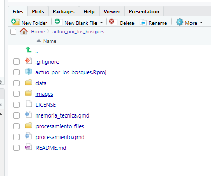

Describe el proceso que seguiste para obtener tus resultados, cuéntanos qué hacer antes, durante y después de obtener el resultado. Coloca la información lo más detallada posible, sigue una estructura de pasos con la idea de que otras personas que los lean puedan replicar los resultados.
Antes
El reto se ha realizado en la siguiente versión de R:
R.version
_
platform x86_64-w64-mingw32
arch x86_64
os mingw32
crt ucrt
system x86_64, mingw32
status
major 4
minor 2.3
year 2023
month 03
day 15
svn rev 83980
language R
version.string R version 4.2.3 (2023-03-15 ucrt)
nickname Shortstop Beagle
Para poder generar realizar el análisis se tomaron los siguientes pasos:
Revisión de los contenidos de los cada archivo. Se notó que teniamos archivos en formato .xlsx (en el caso de las matrices temáticas) y .zip (para los shapefiles), para los segundos fue necesario descargarlos y descomprimirlos.
Nuestro repositorio quedo de la siguiente manera:
Contenido del proyecto
Carpeta data/

 |
Con estos pasos, procedimos a tener una conversación en el grupo para ver qué variables eran de interés y cuáles podían servir para responder las preguntas sobre las estaciones en los distintos puntos del país. Debido a la gran cantidad de información decidimos abarcar la pertinencia de los puestos forestales de control desde tres aristas:
Aprovechamiento del recurso forestal
Datos sobre la atención a denuncias
Datos los controles realizados en los puntos de control de acuerdo al origen y destino del recurso forestal.
Durante
En la etapa previa, se utilizó los recursos de datos en cuanto a la información geográfica para examinar diversos aspectos relacionados con los recursos forestales: puestos de control de recursos madereros y no madereros, las denuncias atendidas en cuanto al volumen de retención y los controles realizados al recurso forestal de acuerdo al origen y al destino de estos recursos.
Con los recursos señalados y las variables de interés vamos a calcular los agregados que debido a su pertinencia nos permitan evaluar el estado de los puntos de control. Para cada una de las fuentes en mención se siguió el siguiente proceso:
Limpieza de las cabeceras de las bases de datos
Agrupación de la matriz al nivel geográfico más detallado y posible en la fuente de información.
Cálculo del indicador:
Conteo de número de revisiones realizados en los puntos de control a los recursos forestales de acuerdo al origen y destino del recurso forestal
Áreas de los predios y destinadas a programas forestales
Número de denuncias realizadas en cada parroquia y valor retenido en cada parroquia del recurso forestal
Creación de variables de unión en cada fuente para graficar la información de los indicadores en las capas geográficas.
Unión de las tablas de resumen con el diccionario pertinente a la división geográfica.
Este proceso de los recursos permitió obtener una visión más completa de la situación de los bosques y los recursos forestales, así como de las denuncias relacionadas.
Nuestro objetivo es aportar a la representación gráfica de la pertinencia de los puntos de control forestal así como ayudar a la comprensión de la distribución espacial de los recursos, identificar áreas críticas o en riesgo, optimizar la ubicación de los puestos de control y mejorar la gestión y protección de los bosques.
Después
Empezamos con la creación de una historia. En nuestro caso los personajes de nuestra historia serán los puestos de control fijo. Decidimos generar 6 gráficos: Distribución geográfica de puestos fijos y áreas vulnerables, aprevechamiento del recurso forestal aprobado y efectivo, volumen verificado y retenido en los puestos fijos de control, controles y denuncias realizadas en los cantones y puestos fijos. En todos los casos replicamos la misma estructura de código y comentarios detallada a contnuación:
Integración de la tabla de indicadores a la capa geográfica manteniendo el formato sf
Creación de capas con ggplot()
Visualización del coroplético
Visualización de areas vulnerables
Visualización de puestos de control
Ajuste de parametros en cada capa
Definición del formato de salida
Inclusión de leyendas
Con esto concluimos el procesamiento realizado para nuestro análisis, el resultado lo pueden observar en el siguiente enlace:
------
Punto 2
Crea un mapa que evalúe la locación de los puntos de control forestal. En el mapa incluye las capas que creas importantes para comprender la pertinencia de los puntos de control.
De los mapas realizados consideramos aquel que representa la pertinencia de los puestos de control fijo es el siguiente:
Cuéntanos, ¿crees que la información proporcionada fue suficiente para alcanzar el objetivo? Qué información adicional crees que se necesita para mejorar el proceso y obtener mejores resultados.
Consideramos que la información fue realmente completa, en el sentido que abarcaba muchas perspectivas para entender las dinámicas de transporte del recurso forestal. Una oportunidad de mejora se encuentra en la construcción de un catalogo de recursos disponibles. Dejamos un ejemplo para ilustración a partir de una dificultad que encontramos. El archivo de áreas en conservación contiene los polígonos de áreas tales como manglares y territorios de comunidades, sin embargo tuvimos que deducir del nombre del archivo el contenido del mismo. Entonces nuestra sugerencia es la siguiente:
Archivo
Descripción general
Fuente
v_hc005_area_bajo_conservacion_aPolygon
Poligonos de areas bajo conservación
Acuerdo-Ministerial-Nro.-MAATE-2022-066
Punto 4
Ahora que ya finalizaste la guía y conoces cómo lograr los resultados, qué recomendaciones darías a un técnico que planea replicar tu proceso.
Como fans de R sugerimos usar R. Como podrás observar en nuestro documento de análisis (-----), la conjunción de R y documentos Quarto nos permiten redactar documentos de reporte donde podemos conjugar la narrativa y el código de R. Para cada mapa, y para cada tabla, empleamos la misma lógica de limpieza y visualización, haciendo que la reproducción de nuestro reporte requiera un menor esfuerzo.
Otro punto a favor de usar R es la puesta en escena, nuestro reporte es un archivo HTML alojado en GitHub para presentarse como una página web. Esta alternativa puede reducir tiempos de procesamiento y presentación.
Otra recomendación que damos como equipo es la constante retroalimentación con compañeros que tengan distintas perspectivas acerca de un mismo fenómeno. Pensemos que el objetivo de este taller buscaba ello justamente, aportar con distintas visiones a la comprensión del control forestal.